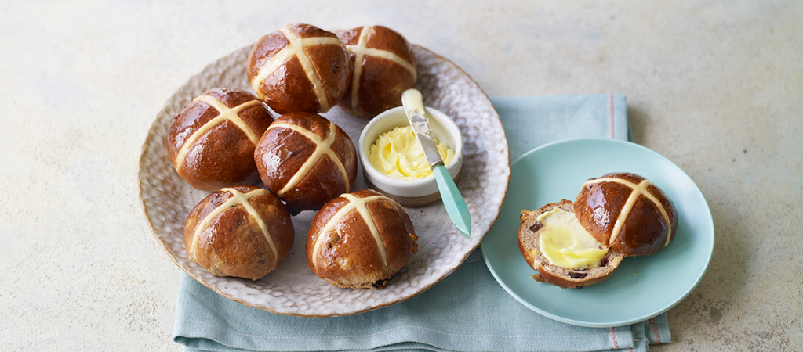

Here you can see some of the bakers' recipes and try them out yourself at home!
Steph's Hot Cross Buns

Ingredients
For the dough:
520ml whole milk
900g strong white bread flour
135g golden caster sugar
4tsp ground cinnamon
1.5tsp mixed spice
2tsp salt
20g dried yeast
2 eggs
100g unsalted butter
200g sultanas
80g dried cranberries
100g mixed peel
Zest of 2 oranges and 2 lemons
For the glaze:
35g caster sugar
1tbsp golden syrup
1 star anise
3 cloves
Half a cinnamon stick
Pinch of ground nutmeg
For the cross:
100g plain flour
Water
You will also need:
2 baking trays lined with baking paper
Piping bags
An electric food mixer (not essential, but definitely helps)
Method
Make the dough. Warm the milk in a small pan over a low heat until hand hot. Place the flour, sugar and spices in a stand mixer fitted with the dough hook. Sprinkle the salt on one side of the mixture in the bowl and the yeast on the other. Make a small well in the centre and pour in the milk and add the eggs.
With the mixer on medium speed, gradually add the softened butter and mix for about 5 minutes, until the dough is smooth and elastic. Add the dried fruit and the zests and mix for a further 3–5 minutes, then turn out the dough into a large bowl (it will be very sticky) and cover with cling film. Leave the dough to rise somewhere warm or in a proving drawer for about 1 hour, or until doubled in size.
Once the dough has risen, knock it back. Weigh it and divide it into 24 equal pieces (each will be about 80–85g). Cup your hand over the top of each piece in turn, pressing gently and rolling the piece on the work surface to form a neat bun. Place the buns on the baking trays, spacing them well apart. Place each tray inside a large plastic bag or cover with oiled cling film and leave to prove in a warm place or proving drawer for a further 45 minutes, or until doubled in size.
Meanwhile, prepare the glaze. Heat the sugar, glucose syrup and 2 tablespoons of water in a small pan over a low heat until the sugar has dissolved. Add the whole spices and the ground nutmeg, increase the heat and bring to the boil. Boil for about 3 minutes, until slightly syrupy, then remove from the heat and leave to cool in a bowl until needed.
When the buns have finished proving, heat the oven to 210°C/190°C fan/Gas 6-7. To make the crosses, mix the flour and 100ml of water in a small bowl to a smooth paste. Spoon the mixture into the piping bag and snip the end to make a small hole. Pipe a neat cross on the top of each bun.
Bake the buns in the oven for 18–20 minutes, or until golden brown. Remove from the oven, brush liberally with the sugar syrup, then place on a wire rack to cool before serving with the butter.